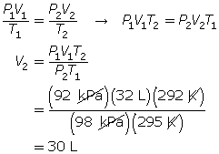

Module 3—Behaviour of Gases
 Module 3: Lesson 2 Assignment (Part 1)
Module 3: Lesson 2 Assignment (Part 1)
You will complete the following lab as part of your Lesson 2 Assignment. When you are doing the lab, record the volume and temperature readings on paper. When the lab is complete you will enter the data in the assignment and answer some questions about the lab.
 Lab: Charles’ Law
Lab: Charles’ Law
The following lab activity will enable you to complete a virtual investigation of Charles’ law. Be sure you read through the Background, Procedure, and Assignment before beginning the lab.
To work on your assignment as an online quiz, click on Module 3 Lesson 2 Assignment in the "Quizzes". Complete questions 1 to 11 in the assignment.
To complete your assignment as an MSWord document, click Module 3 Assignment 2. Complete the questions in parts 1 and 2.
 Read
Read
The combined gas law describes a relationship among pressure, volume, and temperature consistent with Boyle’s law and Charles’ law. Read “The Combined Gas Law” on page 156 to 158 in your textbook. Carefully work through “SAMPLE problem 4.1” and “COMMUNICATION example 4” on pages 157 and 158.
 Self-Check
Self-Check
SC 6. A gas has a volume of 32 L, a temperature of 22°C, and a pressure of 92 kPa. If the temperature is decreased to 19°C and the pressure is increased to 98 kPa, what is the new volume of the gas?
SC 7. The combined gas law is very useful, since it is possible to obtain both Boyle’s law and Charles’ law from this one formula.
- Explain how Boyle’s law may be obtained from the combined gas law.
- Explain how Charles’ law may be obtained from the combined gas law.
Self-Check Answers
SC 6. First, list all the variables.

SC 7.
- If the temperature is held constant, T1 = T2 = T. Since T is identical on both sides of the equation, they will cancel, reducing the combined gas law to Boyle’s law.

- If the pressure is held constant, P1 = P2 = P. Since P is identical on both sides of the equation, they will cancel, reducing the combined gas law to Charles’ law.